护肝攻略
墨山道快速刷建造和图纸的方法
这个小攻略是给加入墨山道门派的伙伴们一个参考，如何快速刷满论文以下两项：
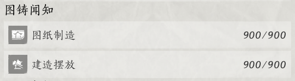
这两项比较快速能做完，推荐伙伴们优先提升他们的论文分上限。
快速达成建造摆放
这里分享的方法是利用小图纸来成组摆放建造物，节省一个一个建造和拆除的时间。（什么？你就喜欢每次造新的，一个一个造？那可以跳过这个攻略了~）
1）使用分享的竹子图纸快速建造和拆除
这里的图纸分享码是SHAREb437990f7a196eaf，可以在家业的方外地建造和拆除。需要用到的材料如下：
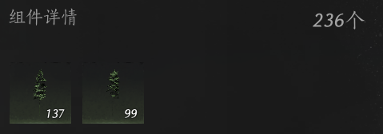
比较熟悉按图纸建造的伙伴可以跳过下面的详细步骤，重点就是“找到小图纸+成组摆放+填充虚影+直接回收”。
详细使用步骤如下：
步骤 | 描述 | 图片示例 |
|---|---|---|
1 | 打开菜单，点击“外观” |
|
2 | 点击右边“万相集” | |
3 | 选择左边的“建造”，找不到可以上下滚动一下。 | 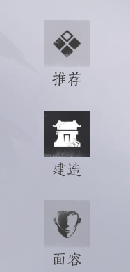 |
4 | 右上角搜索栏填入图纸分享码SHAREb437990f7a196eaf |
|
5 | 点击进入搜索出来的图纸（应该只有一个搜索结果，点进去），点击“获取图纸” |
|
6 | 传送到方外地，找块空地，F4进入建造模式 | |
7 | 打开建造背包（PC端快捷键是”B”），在背包里面找到对应这张小图纸 | 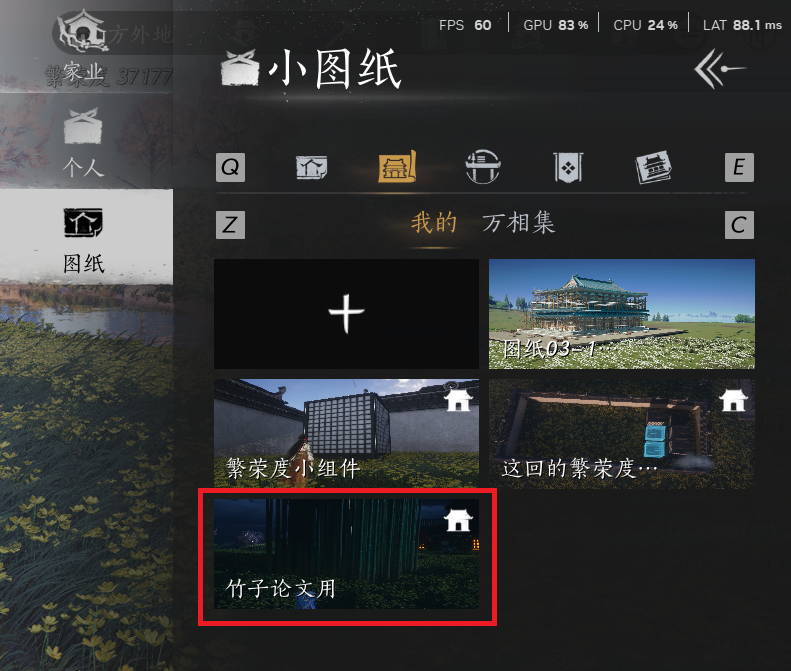 |
8 | 点击图纸，选择“摆放” | 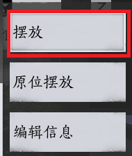 |
9 | 跳出来的确认信息选择“成组摆放” | 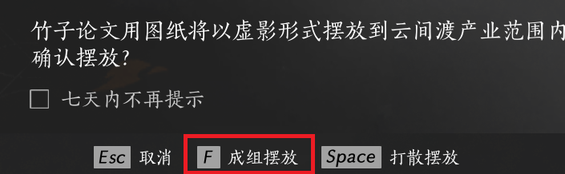 |
10 | 依旧在建造模式下，对着竹子虚影选择“填充虚影” | 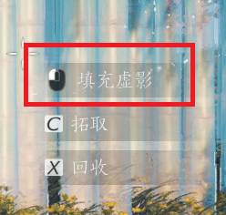 |
11 | 等待填充完毕之后直接选择“回收” | 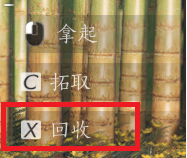 |
12 | 此时退出建造模式，确认论文“建造摆放”分数有没有满，没满就再从第6步重新摆放+拆除即可 |


2) 自己构建图纸，快速建造和拆除
如果没有这么多竹子可以造上面的图纸，可以选择囤2周的竹子，或者拆除一部分现有的竹子。或者用类似的方法自己设计一个图纸，然后每周反复成组摆放。以下简单介绍自己设计图纸的步骤：
步骤 | 描述 | 图片示例 |
|---|---|---|
1 | 先在一块空地上造完你想要摆放的东西 | |
2 | 进入建造模式（PC端是F4） | |
3 | 进入建造菜单（PC端是~) | 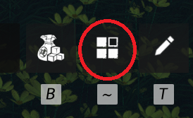 |
4 | 菜单选择“图纸” | 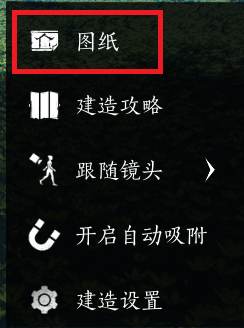 |
5 | 然后选择小图纸这个tab ，之后选择新建一个图纸（绿色圈） | 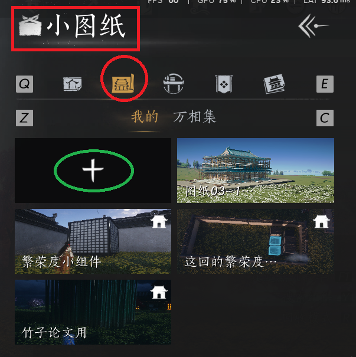 |
6 | 这时候会高亮一个默认30 * 30的区域，要确认这个区域框住了所有你想包括在图纸里面的建造物。可以拖动四个方向的箭头调整方框大小和位置。满意之后点“生成图纸” | |
7 | 然后就可以用上面竹子部分介绍的攻略，使用同样方式反复成组摆放+拆除啦。 |
快速达成图纸制作
这部分的攻略需要的前提是解锁了清河家业的方外地。以下简单介绍步骤。
步骤 | 描述 | 图片示例 |
|---|---|---|
0 | 删除上周背包里的图纸。（进入建造模式->打开建造背包->选择图纸的家业tab->一个一个删除上周的图纸） | |
1 | 进入方外地，选择右上角的锤子。 | |
2 | 在右边弹出的菜单选择生成图纸 | 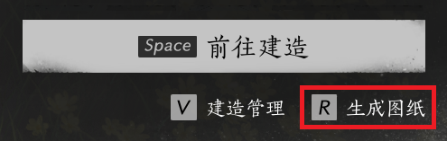 |
3 | 输入图纸名称，随便拍个照片，然后保存。 | 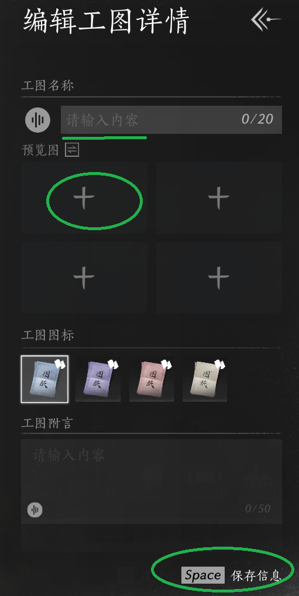 |
4 | 等待图纸生成完之后出现图纸详情，分享万相集的右边栏之后，点击右上角回退，可以直接从步骤2开始。 | |
最后需要注意的是，本周生成的图纸不要删除，在下周才能删。如果你马上删除，论文分就回退了。 |